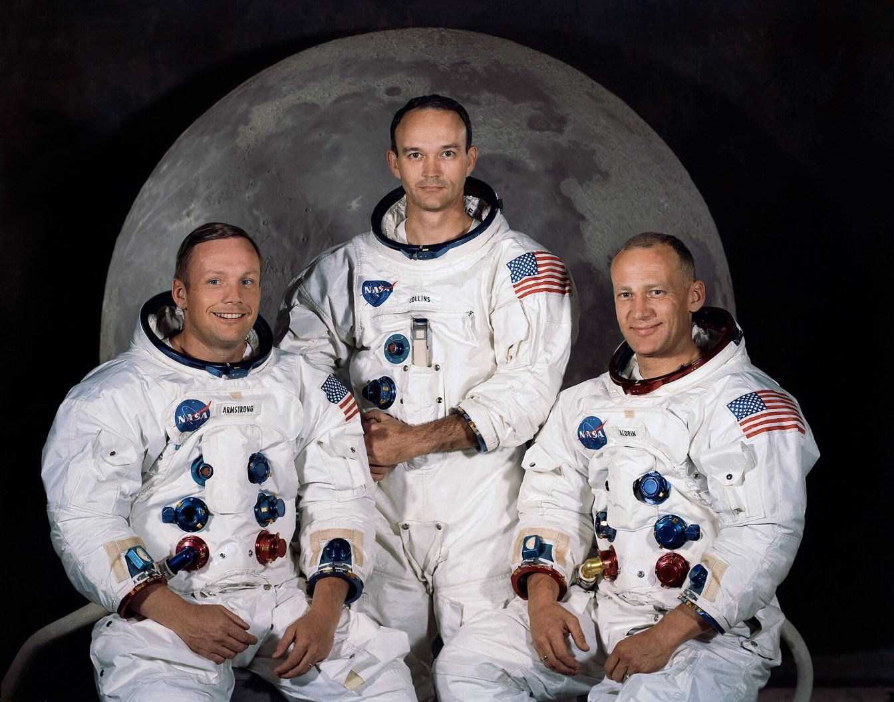
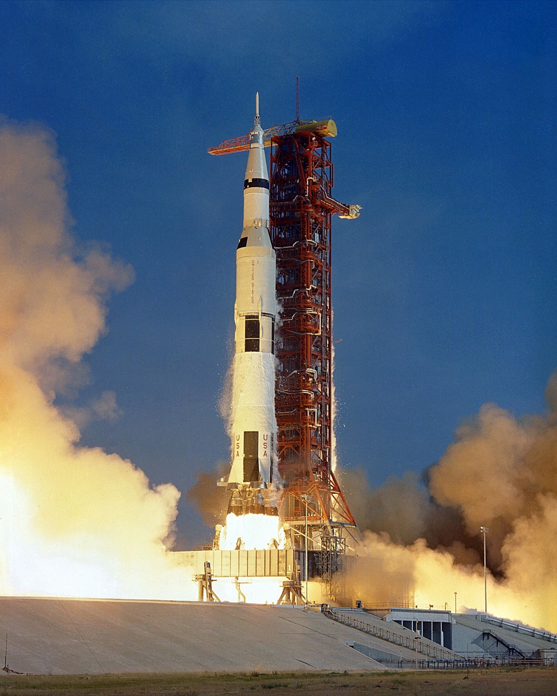

Every earlier mission — every Mercury capsule, every Gemini docking, every test of the Saturn V — existed to make this one flight possible. Three men flew it. Two of them stepped onto another world. Here is the mission, minute by minute.
The crew

The mission timeline
Saturn V AS-506 leaves Launch Complex 39A. A million people watch from the Florida coast.
The third stage fires a second time — the trans-lunar injection. Three days of drifting follow.
After a descent full of alarms and warnings, the Eagle touches down in the Sea of Tranquility. Fuel left: about 25 seconds' worth.
Armstrong crawls out backwards, down the ladder, watched live by an estimated 600 million people.
Armstrong's left boot touches the lunar surface. The first words are spoken from another world.
The moonwalk lasts 2 h 31 min 40 s. Armstrong and Aldrin plant the flag, take photos, and collect 21.55 kg of Moon rock.
The Eagle's ascent stage fires — the first launch ever from another world — and docks with Collins in Columbia at 21:35 UTC.
Columbia lands in the Pacific. The crew spends 21 days in quarantine, in case the Moon had microbes. It didn't.

The landing that almost didn't happen
The descent to the Moon lasted about 12 minutes, and the last four of them were chaos.
At about 1,800 metres above the surface, the guidance computer flashed program alarms "1201" and "1202" — it was overloaded and could not keep up with its tasks. In Mission Control, 26-year-old guidance officer Steve Bales had to decide in seconds whether the landing could continue. Jack Garman in the back room recognised the alarm as a known, recoverable condition. Bales called "GO." The computer restarted itself and kept flying.
Then Armstrong looked out of the window and saw the autopilot aiming for a field of boulders. He took manual control and flew the Eagle over the rocks — while the fuel gauge ran down. When the Eagle finally settled, mission control estimated 25 seconds of hover fuel remained (later analysis suggests it was closer to 50). A few more seconds of searching for a landing spot, and the mission would have been aborted.
The words
"Houston, Tranquility Base here. The Eagle has landed." — Neil Armstrong, 20 July 1969
"That's one small step for man, one giant leap for mankind." — Neil Armstrong, 21 July 1969, 02:56:15 UTC. He intended to say "for a man", but the "a" was lost in the broadcast.

What they left behind
Bolted to the Eagle's descent stage was a plaque, still on the Moon today:
"HERE MEN FROM THE PLANET EARTH FIRST SET FOOT UPON THE MOON JULY 1969 A.D. WE CAME IN PEACE FOR ALL MANKIND."
They also left the American flag, scientific instruments, and footprints. With no wind and no rain on the Moon, those footprints will outlast every monument on Earth — unless a future visitor disturbs them.
After Apollo 11: six more landings
| Mission | Dates | Crew (CDR / CMP / LMP) | Landing site |
|---|---|---|---|
| Apollo 12 | 14–24 Nov 1969 | Conrad / Gordon / Bean | Ocean of Storms |
| Apollo 13 | 11–17 Apr 1970 | Lovell / Swigert / Haise | Aborted — no landing |
| Apollo 14 | 31 Jan–9 Feb 1971 | Shepard / Roosa / Mitchell | Fra Mauro |
| Apollo 15 | 26 Jul–7 Aug 1971 | Scott / Worden / Irwin | Hadley-Apennine |
| Apollo 16 | 16–27 Apr 1972 | Young / Mattingly / Duke | Descartes Highlands |
| Apollo 17 | 7–19 Dec 1972 | Cernan / Evans / Schmitt | Taurus-Littrow |
Apollo 11 was only possible because of two years of practice missions. That was Project Gemini — the program that taught NASA how to fly to the Moon.